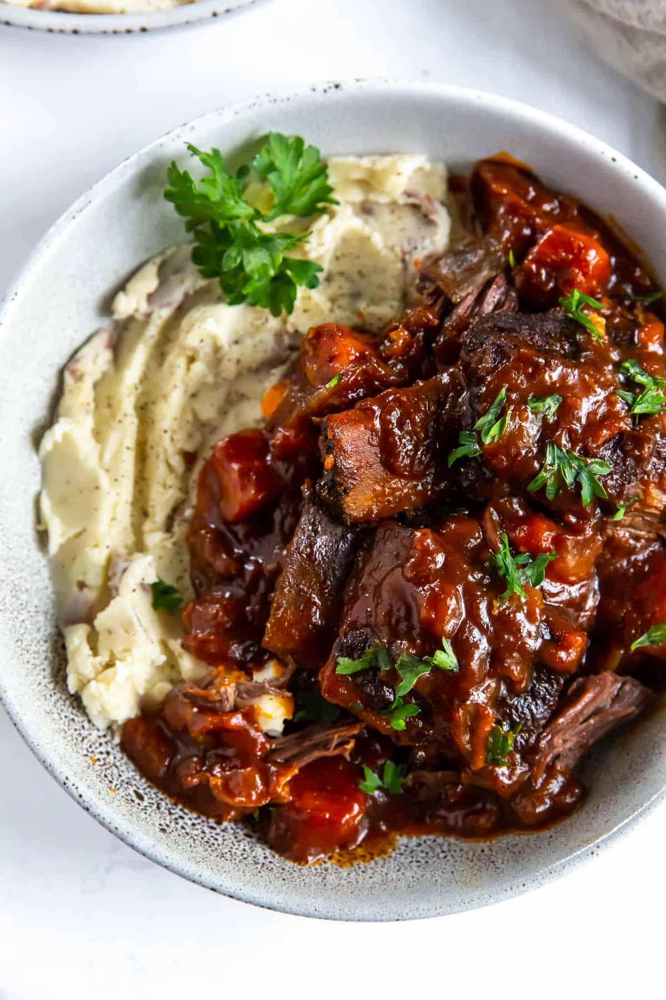

Braised Short Ribs

Description
“Short”ribs come from the beef chuck portion of a cow
and there are usually five of these small pieces of meat that are too
small to be sold as good steaks. So, they are exactly what the name
implies; short (small) ribs.
Braising is a cooking method where you brown the meat and
simmer it on low heat. You don’t need any special equipment to braise
ribs. First, brown or sear the ribs at a high temperature then cook them
in liquid at a lower temperature for a longer period of time. This is an
excellent cooking method for tougher cuts of meat that will become tender
after prolonged cooking!
Ingredients
- 4 slices bacon, cut into ½-inch pieces
- 3 ½ pounds beef short ribs
- salt and ground black pepper to taste
- 6 sprigs fresh thyme, leaves stripped
- 1 bay leaf
- 1 onion, diced
- 3 cloves garlic, minced
- 2 tablespoons all-purpose flour
- 1 cup dry sherry
- 1 quart beef broth
Steps
- Preheat the oven to 350 degrees F (175 degrees C).
-
Place bacon in a large skillet and cook over medium-high heat, turning
occasionally, until evenly browned, about 10 minutes. Transfer crisped
bacon with a slotted spoon to a Dutch oven. Keep bacon drippings in the
skillet.
- Generously season short ribs with salt and pepper.
-
Heat bacon drippings in the skillet over high heat. Cook short ribs in
hot drippings until browned and caramelized on all sides, 3 to 5 minutes
per side. Transfer ribs to a Dutch oven, reserving drippings in the
skillet. Add thyme and bay leaf to the Dutch oven. Set aside.
-
Reduce heat to medium. Cook and stir onion in the skillet until soft and
golden, 5 to 10 minutes. Add garlic; cook and stir until fragrant, about
30 seconds.
-
Whisk flour into onion mixture and stir until mixture becomes paste-like
and light golden brown, 1 to 3 minutes.
-
Pour sherry into onion mixture; cook until thick and hot, about 2
minutes. Pour onion-sherry mixture into the Dutch oven; pour in beef
broth and season with salt. Bring to a simmer and cover the Dutch oven
with a lid.
-
Transfer the Dutch oven to the preheated oven and cook until short ribs
are fork-tender, about 2 hours. Remove ribs to a serving dish, reserving
sauce in the pot.
-
Set Dutch oven over high heat and boil sauce until reduced and slightly
thickened, about 10 minutes. Spoon reduced sauce over ribs.